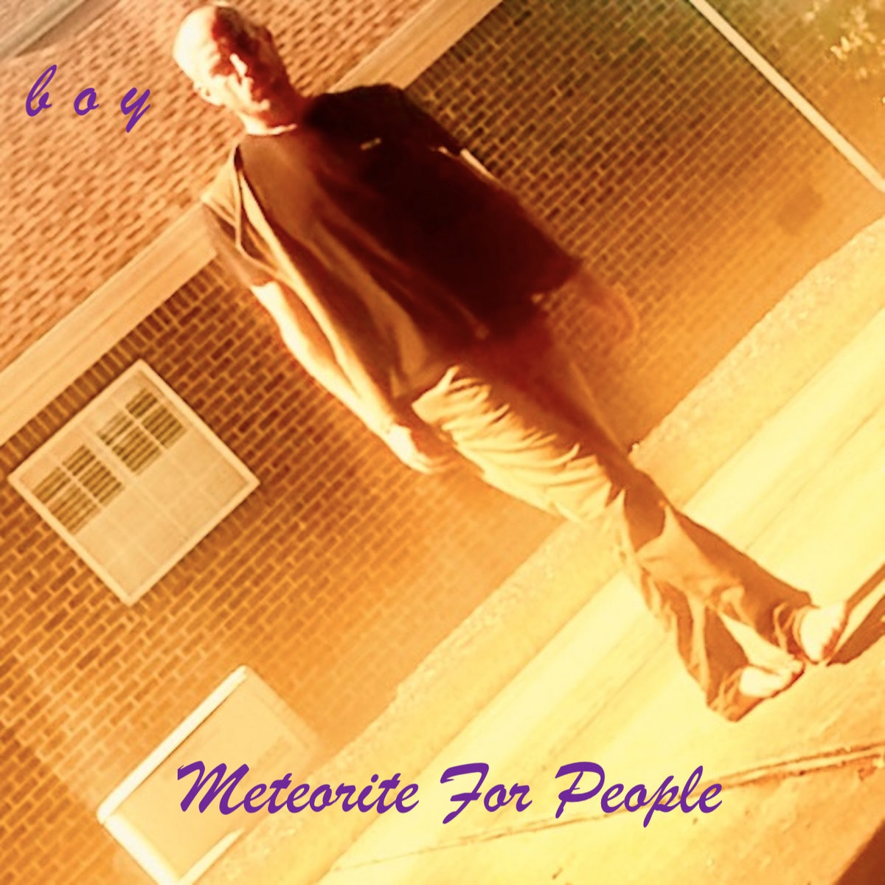
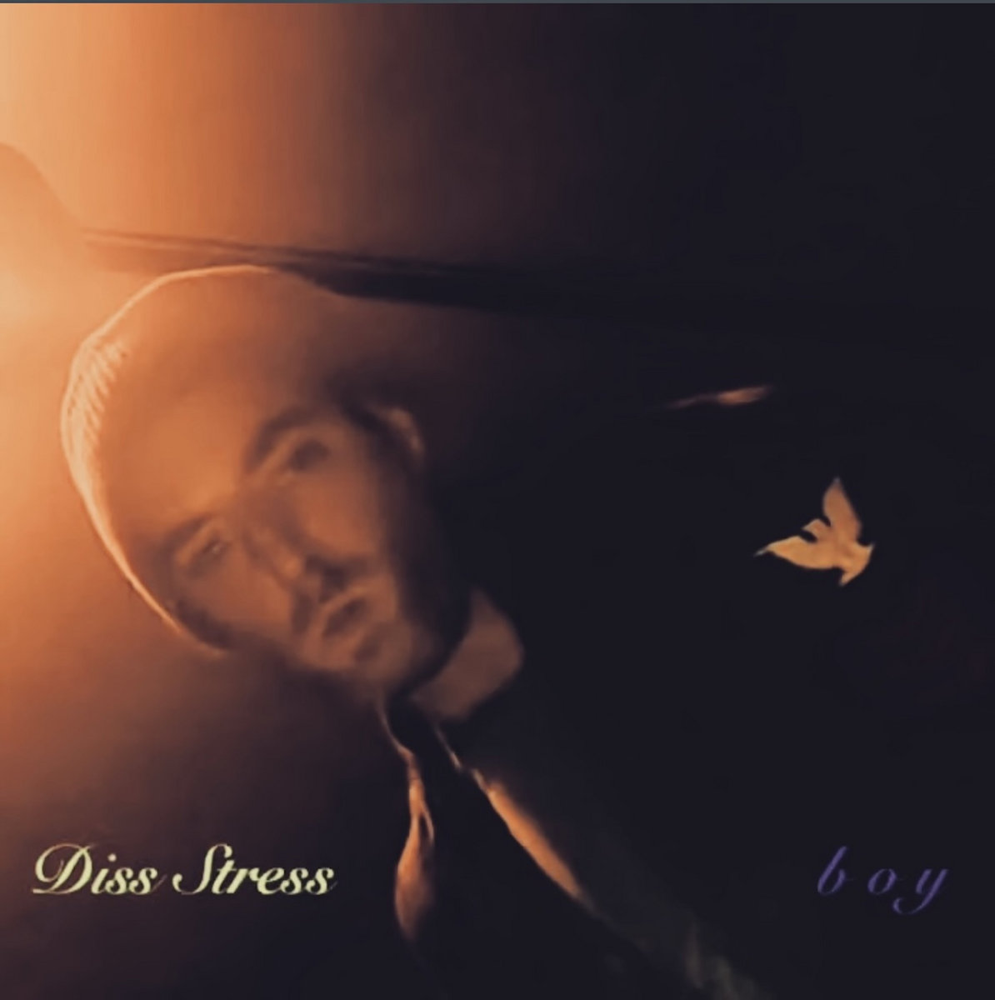

INDEPENDENT MUSIC / COLLECTED WORKSCOME IN. STAY A WHILE. ✳
A PLACE FOR EVERYTHING
boy
Many records.
One restless mind.


to start ↗
Voice. Strings. Samples. Everything in between.
DIG THROUGH THE RECORDS ↓01 / THE LISTENING ROOMSELECTED RECORD
BOY — FOR LOVERS
START HEREFor
For
Lovers.
A dedication to Astrud Gilberto, TLC, and Aaliyah.
Music stays on Bandcamp. Your support goes to the artist.
02 / THE COLLECTED WORK16 RECORDS. KEEP DIGGING.
The record shelf (16)
03 / THE PERSON BEHIND THE RECORDSVIRGINIA BEACH, VIRGINIA
Call me
a friend.
ADAM LEACH / BOY
A voice, a collection of instruments, and a love for ancient history & dead languages.
Rhythm guitar. Vocals. Synthesizer. Bass. Drums. Lead guitar. Drum machine. Acoustic. Organ. Harpsichord. Upright bass. Mixing samples.
SOME OF THE COMPANY HE KEEPS
John Coltrane · Stereolab · Lauryn Hill · MF DOOM · Nina Simone · Spacemen 3 · A Tribe Called Quest · Abbey Lincoln
Influences, as listed by Adam.Stay in the loop.
Follow boy on Bandcamp for new music, straight from the source.
Find boy on Bandcamp ↗